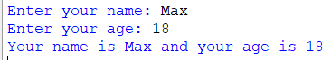

Чудово, тепер ми трішки познайомилися зі змінними, чи всетаки ні? Насправді, не зовсім. У мовах програмування є різні типи змінних для зберігання... різних типів змінних. Ну от для прикладу. Тобі потрібно зберегти вік людини в роках. Тут чудово підійде тип данних int (тип данних ціле число). Якщо хочеш зберегти ім'я користувача... string. Продовжувати можна довго, але це нудно. краще показати на прикладі:
name = input('Enter your name: ')
age = int(input('Enter your age: '))
print(f'Your name is {name} and your age is {age}')

Узагалом, тут ми запитуємо у користувача ім'я та вік і виводимо в консоль інформацію про користувача. Нічого складного, але тут є важлива деталь:
age = int(input('Enter your age: '))
Тут ми бачимо int(input('Enter your age: ')). У цій конструкції ми отримуємо ввід від користувача і приводимо його до типу int - цілого числа. Це важливо, адже ми
можемо працювати з таким значенням як і із звичайним числом. Якщо цього не зробити, приведення строки до типу цілого числа, ми отримаємо помилку при спробі додати число.
Згодься, що до слова "кавун" ну ніяк не можна додати число 2. Дописати до слова число можемо, але не додати.
На цьому цей короткий модуль закінчений. Чекаю в фінальному модулі )